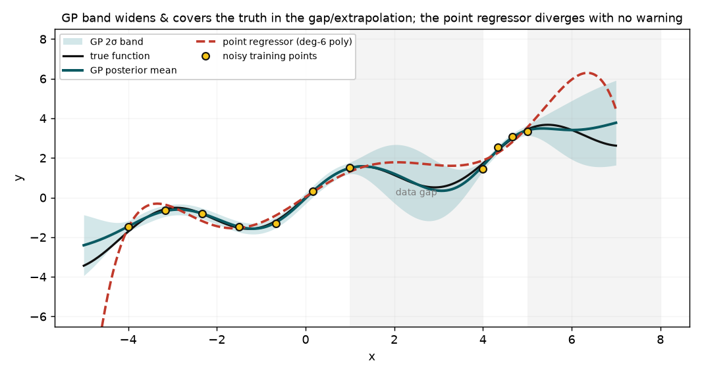

A Gaussian process returns not just a curve but a calibrated uncertainty band that widens exactly where the data runs out — so it still covers the truth in the gap and when extrapolating, while a point regressor is confidently wrong there.

A Gaussian process (GP) treats the unknown function as a distribution over functions and, given noisy training points, returns a closed-form posterior: a MEAN prediction and a VARIANCE at every input. Using an RBF kernel the posterior mean is Ks^T (K + sigma^2 I)^-1 y and the variance is Kss - Ks^T (K + sigma^2 I)^-1 Ks — so the uncertainty is a computed quantity, not an add-on. That variance is small near the training data and grows in the gaps between points and when extrapolating, giving a calibrated 2-sigma band that tells you where the model is guessing.